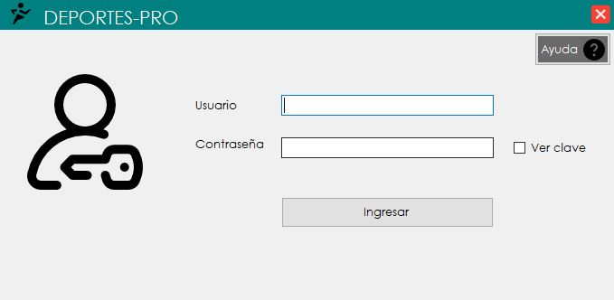
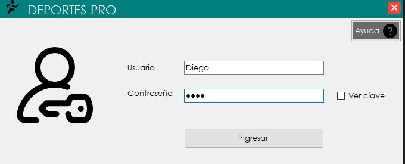
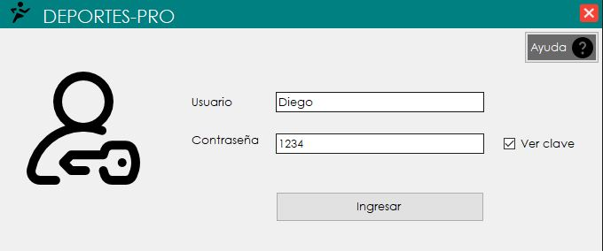

Ingreso Al Sistema (Login)
1. Al abrir el programa se presentara el siguiente formulario:

2. Para poder ingresar al sistema se deben llenar los campos de usuario y de contraseña

3. Tambien se encuentra la opción para poder mostrar la contraseña y verificar si es correcta

4. Por ultimo es de dar click en el boton de Ingresar para poder entrar al sistema